To create a Requality project select 'File' → 'New' → 'Project...' from the main menu.
In opened dialog window choose 'Requality' → 'Requality Project' and push 'Next' button.

On the next page input project name and push 'Finish'.
To create a Requality project select 'File' → 'New' → 'Project...' from the main menu.
In opened dialog window choose 'Requality' → 'Requality Project' and push 'Next' button.
On the next page input project name and push 'Finish'.
The structure of Requality project is as follows:

To open the Requality project settings, you need to call the context menu in the 'Requality Explorer' view on the Requality project and select the 'Properties' menu item. The project settings dialog will be opened. Then you need to select the Requality section or one of its subsections. After that, the corresponding settings will be accessible on the right side of the dialog.
To change the appearance settings of nodes in Requality project you need to:
More information about the sorting modes is available at section Nodes sorting in Requality project.
Setting 'Full name mode' affects on the way the node-related path is formed in the context menu called at 'Requality Explorer' view on node: 'By Full Name' (See Full path to node (FullName)) or 'By User-Visible Name' (see UserVisibleId).
The 'Show description on elements' check box affects the appearance of Requality project nodes in 'Requality Explorer' view.

After finishing editing the parameters, you need to push the 'Apply' button, and then the 'OK' button. The project properties will be saved, and the selected sorting method will be set for this project.
In Requality it is possible to set a custom checking rules ('Checker Rules') for nodes of requirements subtree which allow to check nodes properties for compliance with certain conditions. Attribute values, cross-node relations and hierarchy information can be used in such rules. Rules are written as Java-script expressions returning true or false. In the rule you can use a value of '_type' attribute that allows you to specify the nodes type to which it will be applied. When rules are set, all nodes of requirements subtree which are not meet the specified conditions are marked by error icon in 'Requality Explorer' view. The list of all detected problems can be viewed in 'Problems' view.
To change the 'Checker rules' you need to:

Then in 'Body' textarea you need to enter the rule-related Javascript expression (or edit existing one if one of old rules was selected).
Rule-related JavaScript expression format.
Rule-related expression is written in JavaScript according given rules:
one.attr("_type") != "<my_node_type>" || <my_rule>
Here:
When you change checker rules for a project, all corresponding project nodes are checked for compliance with the defined rules. If some node violates a rule then it will be decorated in 'Requality Explorer' by error icon (small red square with cross over the node icon). Full list of such nodes and related rules violations can be found in the 'Problems' view, that can be openned from the main menu ('File → Window → Show view → Other → General → Problems').

Some examples of Checker Rules:
one.attr("_type") != "TextNode" || one.attr("myAttr")>=1
one.attr("_type") != "Requirement" || one.attr("myAttr") != "myValue" || one.attr("Description").toLowerCase().search(/yes|agree|approved/i)>-1
(one.attr("_type") != "Requirement" && one.attr("_type") != "TextNode") || one.attr("myAttr") != "myValue" || one.attr("Description")!=null
var c = one.getChildren();
var r = null, i;
for(i=0;i<c.length;i++)
if(c[i].attrs()["Id"].contains("User")){
r = c[i];
break;
}
r == null || r.attrs()["_Name"] == "myValue"
In the Requality project settings you can define a mandatory attributes. Those are attributes that must be present in each node of selected type all over a project. You can specify an attribute name, its type and value and select for which node type it will be assigned (at the moment, this function is implemented only for requirements and text nodes). Attributes will be applied for all nodes of seleted type with specified attribute names, types and values except the case when the attribute with the same name already exists. In the project settings it is also possible to remove already defined mandatory attribute (In this case all already created attributes will not be removed and still remain).
Mandatory attributes are assigned, edited and deleted according to the following rules:
A mandatory attribute is automatically assigned to all nodes of the selected type in the given project. It receives the default type and value specified in the settings. The default value can be empty.
If some node already had an attribute with the same name, then that attribute will remain unchanged.
From the moment a mandatory attribute is set, each new node of the selected type will automatically receive this mandatory attribute when created.
A change of type or value on already defined mandatory attribute in the project settings does not affect all already defined attributes. The changes will only appear in new nodes.
You cannot change the name of a mandatory attribute after it has been set. The new name is a new mandatory attribute. You can create a new mandatory attribute and delete the old one.
If an attribute is mandatory for a node, then editing its name in the attributes table is prohibited (impossible), but the type, value, and other properties can be changed.
When you remove a mandatory attribute from the project settings, it will not be removed from all nodes where it was specified for a moment, but will no longer be added to all newly created nodes.
Not only the attributes of attributes table may be declared as mandatory one but also the system one. As an example can be an identifier, name, description and others. Names of such attributes are specified with the '%' prefix (all parameters of different node types are declared in the Glossary).
An mandatory attribute will be displayed in 'Properties' in attributes table of node with a asterisk in the very first column. Other mandatory attributes that are not displayed in attributes table will not be marked in any way.
To define (create) an mandatory attribute you need to:
In 'Requality Explorer' call context menu on the project and select the 'Properties' menu item. The project settings dialog will open.
On the left side of the dialog expand a 'Requality' point and select a 'Mandatory Attributes', then the mandatory attributes settings panel will be displayed on the right side for the selected Requality project.
In the 'Node type' you need to select a node type ('Requirement' or 'Text node') for which you want to add a mandatory attribute.
Then you need to define a name, type and default value for new attribute. There are two ways to do so:
Enter corresponding data into fields 'Name', 'Type' and 'Default value'. Also when you select a complex attribute types like 'LIST' and 'REFERENCE' to change the default value you need first click to 'Default value' field, and then click on button with three dots on it appeared on the right side of the field and then define the value like it is usually made for an attributes of selected type (see Edit requirement parameters, section 'Attributes'). Default value is optional.
Click 'Find attr. names' button. After some time a dropdown list 'Attribute name' will be filled by all attributes from requirements subtree nodes all over the project. It will contain both the attributes from the attributes table and a system attributes, for example, name or description. Then you need to select one of available attribute names. After that its name, type and value will be displayed upper at fields 'Name', 'Type', and 'Default value'. You can edit their values (you need to change the name to be able to alter the type).
It should be noted that names of system attributes (i.e. attribute not from the attributes table) should be specified with '%' prefix. For such mandatory attributes you can not change an attribute type.
Click the button with left arrow. After that an attribute with defined type and name will be listed in 'Defined attributes' list.
Save changes with 'Apply' button and close the dialog by pressing 'OK' button. After that the mandatory attribute will appear at all project nodes that meet the defined rules.

To edit an mandatory attribute you need to:
In 'Requality Explorer' call context menu on the project and select the 'Properties' menu item. The project settings dialog will open.
In the left part of this window you need to expand the 'Requality' item and select 'Mandatory Attributes', then the settings for the mandatory attributes of the Requality project will be displayed in the right part of the window.
In the 'Node type' field you need to select the type of the node ('Requirement' или 'Text node'), whose attribute you want to edit.
In the 'Defined attributes' field you need to select the required attribute by clicking on it.
Edit the type or default value of the chosen attribute in the 'Type' and 'Default value' fields. Please note, if the name of a required attribute will be edited, it will be a different attribute with a new name. Also keep in mind that the type of a system attribute cannot be changed.
Click the button with left arrow. The attribute changes will be saved. Please note, if you do not press the button, the changes will not be saved! Also keep in mind, if the name of a mandatory attribute has been changed, then after pressing this button a new mandatory attribute with this new name will be saved, and the attribute with the old name will also remain.
Save the changes by clicking on the 'Apply' button and close the project settings window (the 'OK' button). Now new nodes will receive the updated mandatory attribute when created. It should be noted, that in those nodes where the mandatory attribute has already been set, it will not change.
To remove a mandatory attribute you need to:
In the 'Requality Explorer' call the context menu on the project and select the 'Properties' menu item. The project settings dialog will open.
In the left part of this window you need to expand the 'Requality' item and select 'Mandatory Attributes', then the settings for the mandatory attributes of the Requality project will be displayed in the right part of the window.
In the 'Node type' field you need to select the type of the node ('Requirement' или 'Text node'), whose attribute you want to delete.
In the 'Defined attributes' field you need to select the required attribute by clicking on it.
Click the button with right arrow. The attribute will disappear from the 'Defined attributes' field.
Save the changes by clicking on the 'Apply' button and close the project settings window (the 'OK' button). Now new nodes will not receive this attribute when created. It should be noted, that in those nodes where the mandatory attribute has already been set, it will still remain.
To change links settings you need to (for more information about using links see Working with links between nodes of the requirements tree):
In the 'Requality Explorer' on the Requality project call the context menu and select the 'Properties' menu item. The project settings window will open.
In the left part of this window you need to expand the 'Requality' item and select 'Requality References', then the settings for links in the Requality project will be displayed in the right part.
The 'References antonyms' section displays information about the names of outgoing and incoming links. The 'Select reference name' field will display a list of names of all project attributes with the 'REFERENCE' type, i.e. a list of names of all outgoing links. It should be loaded using the 'Load reference names' button. The 'Default renames' field displays a list of already defined in the project pairs "outgoing link name → incoming link name", some of these pairs are set by default for any Requality project, the rest of them are created by the user.
To specify or change the name of an incoming link, you need to enter the name of the corresponding outgoing link in the 'Reference name' field. You can also specify the name of the outgoing link by clicking on it in the list of existing link names. If you need to change the name of an incoming link, that has already been specified in a pair to the name of an outgoing link, you can immediately select this pair of names by clicking on it in the field of existing pairs of link names. Next you need to change the name of the incoming link in the 'Backward reference name' field and click the 'Set' button. The new name of the incoming link will be saved in a pair to the specified outgoing link, this updated pair will be displayed in the list of available pairs of link names.
In the 'Default reference name' field you can edit the name that is given to the link by default when creating new links using the '0,1,*' button (see Creating a link using the '0,1,*' button).
Save the changes with the 'Apply' button and close the project settings window (the 'OK' button). The project properties will be saved.

To change the settings of auto-generated node identifiers (for more information about using auto-generated node identifiers see Unique IDs of requirements tree nodes) you need to:
In the 'Requality Explorer' on the Requality project call the context menu and select the 'Properties' menu item. The project settings window will open.
In the left part of this window, you need to expand the 'Requality' item and select 'Sequential Identifiers', then the settings for the automatically generated node identifiers in the Requality project will be displayed in the right part of the window.
If the checkbox 'Enable Sequential Identifiers' is checked, then the mechanism of auto-generated node identifiers is enabled in the project. If the mechanism is disabled, then to enable it you need to check this box, after that the remaining settings of auto-generated identifiers will become available. To disable the mechanism, you need to uncheck the box.
In the 'Attribute name' field you can specify a name for the attribute containing the auto-generated identifier. By default it is named 'ForeignID'.
In the 'Prefix' field you can specify a prefix that will be displayed in the auto-generated identifier before the numeric value. By default, there is no prefix.
Save the changes with the 'Apply' button and close the project settings window (the 'OK' button). The project properties will be saved.

Global attributes that are available on whole project nodes can be defined in view 'Properties view'. To do so you need to click in 'Requality Explorer' on project name. After that in 'Properties view' you will see the properties of this project.
Global attribute can be defined and altered in attributes table. Attribute to be used to define an enum type may be also created there by semi-automatic extraction from existing attributes or manually (see above).
Attributes table for the project is similar to requirements attributes table. You can work with attributes in the same way. See detailed description on how to work with attributes in requirements-related section.

You may edit attribute for a project manually in attributes table. To edit a values of 'ENUM_DEFINITION' you need to reopen 'Enum definition editor' by clicking on the button in 'Value' column.
Global attribute to define an enumeration type can be created manually with the attributes table as it is described below, but you also may extract it from already existed attributes of nodes in a project in semi-automatic way. To do so:
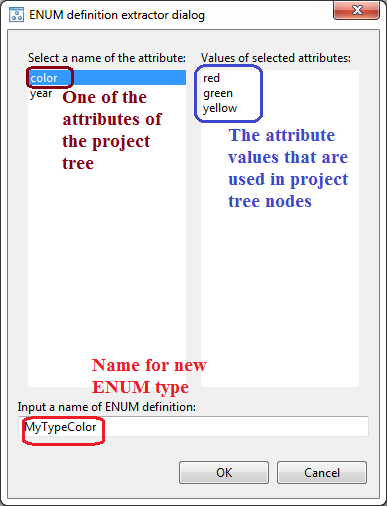
Now attribute of 'ENUM_DEFINITION' type was created and shown in 'Attributes' table with defined name and has the value defined as list of all values you've seen in 'Values of selected attributes'. In 'Properties view' of nodes, which had attributes of this name, you will see that type of attribute is changed to name of created 'ENUM_DEFINITION'.
To view the revision history of a Requality project click on the project name in the 'Requality Explorer'. Then open the 'History' tab in the 'Properties' window. For more information about viewing revisions see View revision history for the Requality project.
If you want to mark requirements in document, first of all you should import the document that contains text of the requirements. The requirements could be written in a free-form. Requality allows importing documents with following extensions: 'doc', 'pdf', 'htm', 'html'. Herewith Requality copies an original document, converts it to 'xhtml' and puts the resulting document to the project. The original document isn’t changed. Resulting 'xhtml' –document is a document that is used in the following work.
Requality allows importing of one document, set of documents, and folders with documents.
To import document select 'Documents' node (or its sub-node). In context menu select 'Import Document...'.
To select source directory push 'Browse...' to the right of the 'From directory:' field in opened 'Document Import Wizard' window and select directory where documents or files with documents are situated.
There are some ways to select required document or folder:
You can use document extension filter. As we wrote above Requality provides import of documents with 4 extensions: 'doc', 'pdf', 'htm' and 'html'. And by default, there is a filter that allows you to import only these types of documents. But you can change the default filter and try to import other documents. So if you want to import document with other extension follow these instructions:
Push button 'Select types' in 'Document Import Wizard' window.
In opened 'Select Types' window in the list of available extensions select documents you want to import. Not-selected extensions are not available to import and you won’t see them in 'Document Import Wizard' window
In 'Select Types' window you can also use 'Select All' and 'Deselect All' buttons to select and deselect all extensions in folder at once.
If you want to import a document with extension not in the list, (e.g. 'xhtml') input this extension to 'Other extensions:' field.
Note! Requality supports importing for only documents with extensions 'doc', 'pdf', 'htm' and 'html'. For other extensions the result could be incorrect.
Note! If you didn't find your document in the target folder check filter settings.
If you selected required extensions push 'OK'. Now documents with selected extensions are available to import.
Now you should select a target folder. The target folder is a folder in Requality-project where you want your documents to be imported to. Select it in 'Into folder:' field. Default target folder is 'Documents' (the root document folder in the Requality project) or its sub-folder (if you called import on it). Push 'Browse...' to the right of the 'Into folder:' field to select or create other folder. (Read more about document folders and other ways to create them in Create document folder.)
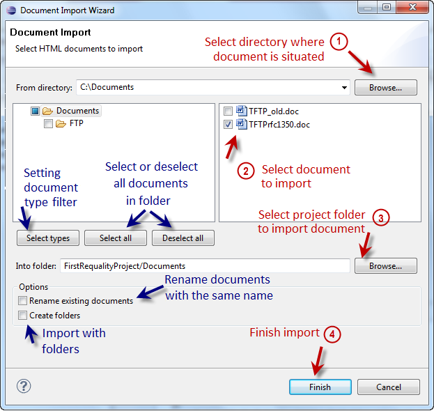
If imported documents have the same names as documents in the project folder you can choose 'Rename existing documents' option. Just select this flag. Now imported documents will be renamed (by adding indexes) if their names are similar to the already imported documents.
When importing a folder with all nested documents and sub-folders, this hierarchy is not transferred in your Requality project as default. All documents from the folder and sub-folders are got into the target folder 'Documents'. If you want to save the hierarchy use 'Create folders' option in 'Document Import Wizard' window. Now all importing documents will be transferred by a hierarchy.
Now if you have already chosen importing documents and selected target folder finish import by pushing 'Finish' button in 'Document Import Wizard' window.
If the import process is successful, the imported documents will appear in the project tree in the target document folder, converted to the 'xhtml' format required for further work.
To delete a document select it in 'Requality Explorer' view.
In context menu (click right mouse button on document) select 'Delete Document'. Also you can use 'Delete' hotkey.
Confirmation window for deletion of the document will appear. Push 'OK' button in this dialog to proceed document deletion.
If there are marked locations in the document you want to delete, you will get one more confirmation dialog on this step. This dialog warns you that all marked locations will be deleted together with the document. If you agree and want to proceed deletion push 'OK'. Note! All locations marked in this document will be deleted from the requirements. The requirements will remain without links to these locations.
'Requality' allows updating documents by transferring requirements locations from an old document version to a new one. You can read about it here: Transferring locations to new document version.
There is possibility to create folders in 'Documents' node and place documents there. It helps to comfortably organize documents in 'Requality' project.
And now you can import documents to the new folder.
To delete a document folder choose it in 'Requality Explorer'.
Сlick right mouse button on chosen document folder, select 'Delete Folder' in the context menu. You can also use 'Delete' hotkey when chosen folder is selected.
Confirmation window for deletion of the document folder will appear. Note! Folder deletion causes deletion of all nested documents and sub-folders. If you are sure push 'OK' button in a confirmation dialog to proceed deletion.
If folder being deleted or its sub-folders contain documents with marked locations you get one more confirmation dialog on this step. Note! If you delete the folder all nested documents are deleted. Thus all the locations in these documents are deleted too. If you agree and want to proceed push 'OK' button in a confirmation dialog.
All requirements in Requality project are situated in 'Requirements' node.
There are several ways to create new requirement: from 'Requality Explorer', from 'UniEditor' and from 'ModuleEditor'. Requirements may be created both from scratch and from requirement templates of current project. Note that it is allowed to add new requirements as a child only for requirement and it is disallowed to add them to text node.
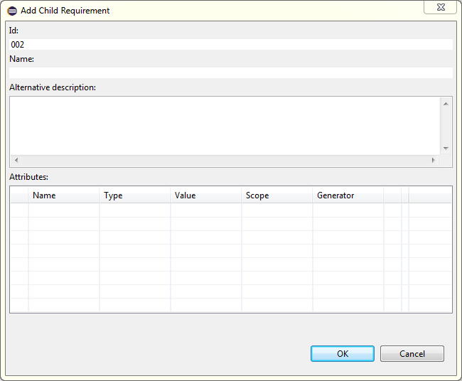
Requirement can be created as copy of existing requirement.
Note! If you delete a requirement all its locations are deleted and all corresponding marks in the documents are deleted too. Also, along with the requirement, its entire subtree will be deleted, including nodes of all types (requirements and comments, and other possible nodes if additional plugins are used).
Note! If you need to copy a text fragment from the document editor, use the hotkeys 'Ctrl+Shift+c' for copying.
You can create a requirement in the document editor ('Markup Editor') and add the location to it at the same time.
As a result, the target requirement gets new sub-requirement with the location. The text of this location is marked in the document.

You can read about simple requirement creation in Create requirement section.
A requirement can have several locations (some links to text pieces marked in the document). So you can add new location to an empty requirement (which has no locations yet) or to a requirement, which already has some locations.
As the result selected location is marked in the text with yellow color and is added to the target requirement. That is, the target requirement now contains a link to this fragment of text.
To delete a location from the requirement you should delete its selection in the document. Thus location will disappear from the document and from the requirement. Note! If the location belongs to several requirements at the same time, it will be deleted from all these requirements. (If you want to delete the location from the specified requirement only see Delete location in Properties view).
Here is another way how to delete a location from a requirement. This way is suitable if the location belongs to more than one requirement but you want to delete it from the one specified requirement.
'Requality' allows marking locations in document automatically. Select document in 'Requality Explorer' and in context menu select 'HTML Headers Document Processor'. This processor allows marking HTML-headers (text inside <h1></h1>, <h2></h2> and so on) as locations. Every location is added to a new requirement.
To edit requirement parameters select the requirement in 'Requality Explorer' or one of its locations in 'Outline'. Now you can see requirement properties in 'Properties' view. Here we describe requirement parameters you can change manually.
To finish editing of generator push 'OK' button. To cancel editing push 'Cancel' button.
To view the revision history of a requirement, click on chosen requirement in the 'Requality Explorer', then open the 'History' tab in the 'Properties' window. This tab contains a table with the revision history of this requirement (for more information on viewing the history and comparing revisions, see View revision history for requirement tree nodes section). The top row of the table corresponds to the latest revision synchronized with the global repository. Then, from top to bottom, there are revision rows in descending order, from newer to older.
'Requality' allows transferring locations to a new document version.
If you have a document with locations and you get a new verision of this document with modifications and additions than you may want to transfer old locations to the new document. Do the following:
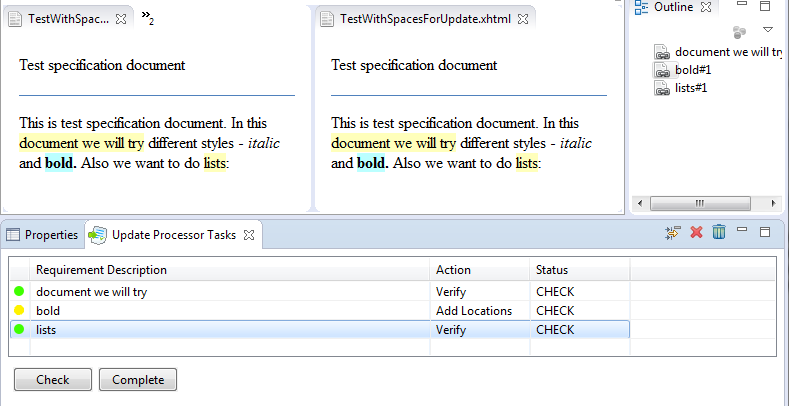
In addition, each task has one of the following statuses:
'CHECK' - means that this task has not been checked yet. Just after the transfer of requirements, all tasks have this status by default.
'COMPLETED' - means that this task has already been checked. This status is set by the user.
The user performs further actions for each task in the table.
Note. In case of switched-on synchronization between 'Requality Explorer' and browser (toggled button 'Link with Editor' in the 'Requality Explorer' toolbar) opening of two documents from view 'Update Processor Tasks' may be incorrect for task with none locations in the new document (with red icon). For correct opening of the locations, it is suggested to switch-off the synchronization between browser and 'Requality Explorer'.
Note. It is assumed to transfer requirements sequentially for different documents. Firstly, requirements from one document are transferred and if necessary corrected. Then proceed to the following documents.
'Requality' allows to add new tests to a test purpose or a requirement by using extending test generator.
'Requality' provides test generation by special pattern.
Tests can be generated from 'Requality Explorer':
It is also possible to add test from 'Coverage' report by pressing "Add test" button in the report view.
Also you can use Eclipse main menu → 'File' → 'New' → 'Other' → folder 'Requality' → 'Create Test'.
Bulk operations allow you to perform various manipulations at once for an entire subtree of requirements, including, if it is necessary, the entire tree of project requirements.
To start working with bulk operations, you need to perform several actions that are common to all operations:
In the 'Requality Explorer' select the target node in the project requirements tree. The next operation will be performed for the target node and (depending on the operation) its entire subtree.
In the opened window 'Mass ops wizard' you will be asked to select again the target node of the requirements tree, for which the further operation will be performed. Then click the button 'Next >'.
The window with a list of available bulk operations will be opened.
- an operation for bulk changing of attribute values. This operation allows to select one of the existing attributes by name and set one value for it, which will be assigned to all attributes with the same name that exist in the target node's subtree. To run this operation after completing the first two steps described above, do the following:
Select the 'AttributeValueChange' operation from the list and click the 'Next >' button.
In the 'Attribute Value Change Settings' window in the 'Select a name of the attribute:' field select the required attribute. Then in the 'Values of selected attributes' field there will be displayed a list of values belonging to this attribute in the nodes of the target node's subtree.
Below in the field 'Type new value' you need to enter a new value and click the 'Finish' button.
The selected attribute in all nodes of the entire subtree of the target node will receive the new specified value.
- an operation for bulk changing of the name and type of an attribute. This operation allows to select one of the existing attributes and change its name and/or type. The change will affect all attributes with the selected name that exist in the subtree of the target node. To run this operation after completing the first two steps described above, do the following:
Select the 'AttributeTypeChange' operation from the list and click the 'Next >' button.
In the 'Attribute Type Change Settings' window in the 'Select a name of the attribute:' field select the required attribute. Then in the 'Values of selected attributes' field there will be displayed a list of values belonging to this attribute in the nodes of the target node's subtree.
Below in the 'Select new attribute name' field you need to enter a new name of the attribute (or leave the field blank if the name does not change).
In the 'Select new attribute type' field you must select a new attribute type from the drop-down list (or leave this field empty if the type does not change).
Click the 'Finish' button.
The selected attribute in the entire subtree of nodes of the target node will be set to the new name (if it was specified) and/or the type of such attribute will be changed to the new one (if it was selected).
- a bulk operation that allows to assign 'ForeignID' attributes to nodes of the requirements tree for synchronization with identifiers in the IBM Rational DOORS project (see Export changes from a Requality project to a DOORS module section). This operation is carried out based on the ReqIF file, exported from IBM Rational DOORS. To run this operation do the following:
In the 'Requality Explorer' select the root of the project requirements tree - the node 'Requirements'. The following action will be performed for the entire project requirements tree.
In the opened window 'Mass ops wizard' you will be asked to confirm the selection of the root node of the requirements tree 'Requirements' once again. Then click the button 'Next >'.
Select the 'DOORSIdImporter' operation and click the button 'Next >'.
In the 'ReqIF file selection page' window use the button 'Browse:' to select ReqIF file, exported from IBM Rational DOORS, in the file system.
Click the 'Finish' button.
The 'ForeignID' attributes will be set for all nodes of the project requirements tree in Requality.
To create, delete or edit a node template, and to make it active in 'Requality' project previously you need to open a templates editor:
Please note that in templates editor in field 'List of templates' you may see a list of templates only for that type of nodes that is selected in 'Select Node Type' list.
To stop working with templates just press the 'OK' button.
There are two ways to create a node template:
To delete a template:
After that you will see that this template will dissapear from templates list (that means that it was deleted).
To edit a template:
As a result you will see an edit template dialog. You may edit template attributes in the same way as attributes of corresponding node type in 'Properties'. See:
To make one of existing templates 'active template', you need to do the following:
After that you will see that selected template in list 'List of templates' is marked as bold. That means that template is now active. Now all new nodes of the same type will be created from this template.
In Requality project all 'text nodes' are in 'Requirements' subtree. Text node is very similar to 'requirement' (see Requirements section).
You can create text node in the same way as requirement (see Create requirement section).
You can create text node by copying in the same way as requirement by copying (see Create requirement by copying section).
You can delete text node in the same way as requirement (see Delete requirement section). Note that if you delete text node then subtree of its descendants will be also deleted.
You can edit text node in the similar way as you edit requirement (see Edit requirement parameters section). Except for:
To view the revision history of a text node, click on the chosen text node in 'Requality Explorer', then in the window 'Properties' open tab 'History'. Work with this tab is similar to work with tab 'History' for requirement (see Revision history of requirement section).
All test purposes in Requality project are situated in 'Requirements' node in terminal requirements (requirements that have no sub-requirements).
Note! Test purpose could be added only to terminal requirement (that has no child nodes).
Test purpose can be created in several ways: in 'Requality Explorer' and in 'UniEditor'. Test purposes can be created from scratch and from Test purpose templates of current project.
If there is an enabled template for test purposes in a project, then in corresponding menu points will be shown its id. That means that 'Add New Test Purpose' will be renamed, for example, to 'Add New Test Purpose - basic', where 'basic' – is an id of template.
After presented actions are executed, you will see a dialog for test purpose edition.

If an active template was seleted then all fields excepting 'Id' will be filled from that template. 'Id' field will be formed in this way:
Test purpose can be created as copy of existing test purpose.
To edit test purpose parameters select this test purpose in 'Requality Explorer'. Now you can see its parameters in the 'Properties' view.
Here we describe test purpose parameters which you can change manually.
Name
The name of the test situation is not specified by default when created.
The name may not be unique.
Edit the name directly in this field.
If the name is not specified, the test situation is identified by identifier, otherwise - by its name.
Attributes of test purposes are identical to 'requirement attributes'. And you can work with it the same way. See how to work with attributes in detail in Edit requirement parameters section.
To view the revision history of a test purpose, click on the chosen test purpose in 'Requality Explorer', then in the window 'Properties' open tab 'History'. Work with this tab is similar to work with tab 'History' for requirement (see Revision history of requirement).
Test purpose can be deleted in 'Requality Explorer'. In this case you need to select it, right click and choose 'Delete Test Purpose' in context menu. In 'UniEditor' test purpose can be removed in drop down menu of node or drop down menu on right top corner of editor by selecting a menu point 'Delete Test Purpose'. Also you can use hot key 'Delete'. In any case you need to confirm deletion in showed dialog by pressing 'OK' button.
Requality allows to create a new test aimed to check a test purpose in the same way as it is made for requirement. More information is available in Generate test for requirement section.
In the Requality project two types of nodes are involved in generating reports process:
the 'Report Settings' node, which describes all the settings and parameters of the future report, including the report template, which determines the main content of the report,
the 'Report' node, which is generated based on the settings described in the 'Report Settings' node and contains the report itself.
Requality provides a set of standard reports for generation. And there are some pre-installed templates for them.
Some of existed templates are currently in experimental functionality status, that's why they may work unstable and may not have detailed description in this documentation. In report settings such templates are grouped in the 'EXPERIMENTAL' section.
It is also possible to add your own report template (see Add and delete report template section).
Standard types of Requality reports:
EXPERIMENTAL
A report in Requality is genereated based on a report template. The template is selected in the report settings from the list of available templates (see Edit report settings parameters section). In addition to the set of report templates built into Requality, additional report templates can be used. But to do this, you must first add them to Requality. Also you can delete a template from the list of available report templates if it is not built in by default.
To add a new report template to Requality you need to:
After that the new report template will appear in the list of available report templates in the 'Templates' tab (see the image below). It will also be available for selection in all report settings.

To delete an added report template, you need to:
As a result, this template will disappear from the list of available templates and will no longer be available for selection in the report settings.
To create report you must first create Report Settings. Report could be generated for some node named 'Root requirement'. Such report contains information about selected node itself and all its subrequirements. A report type depends on selected template.
To create report settings node click on 'Reports' node (or any report folder) and select 'New → Report Settings' in the context menu. Report settings will be created.
To edit report settings parameters select this report settings in 'Requality Explorer'. Now you can see its parameters in the repot settings 'Properties' view.
Here we describe report settings parameters you can change manually.
Requirements node is set by default.
Push the 'Browse...' button, in the opened window select requirement, that was chosen as root for this report, and push 'OK'.
Select an appropriate report template in a drop-down list (see 'Template' in Report Settings properties.)
Checkbox Generate report for related projects (applicable not for all report templates)
Check the 'Generate report for related projects' box to generate reports for all related projects in accordance with the given report settings. That is, for those projects whose nodes are linked to the nodes of the current project (provided that these projects are located in the same workspace).
The result of generating a set of such reports will be the ability to follow links between nodes from one report to another.
Checkbox Use project-scope numeration (applicable not for all report templates)
Check the 'Use project-scope numeration' box to use the original project numbering of its objects when generating a report at the subsection level.
As a result of generating a report with this setting, it will become possible to save the original numbering of tree objects as it would be in case of generation a report for the entire project tree from the root level (from the 'Requirements' node).
Checkbox Show root data in generation (applicable not for all report templates)
Check the 'Show root data in generation' box to display the target requirement in the report.
As a result of generating a report with this setting, it will become possible to add the target requirement to the report as a heading. Or, vice versa, unchecking this box will allow to hide the requirement, for the subtree of which the report is being built, from the report.

Attributes of report settings are identical to requirements attributes. And you can work with it the same way. See how to work with attributes in detail in 'Requirements' chapter.
The Update Coverage Source button. This button appears in the options window when you select one of the templates for the coverage report.
Click the 'Update Coverage Source', button to invoke the wizard for setting the coverage information source. For more information see the following sections: Report 'Requirements Coverage Analysis' ('Анализ покрытия требований'), Report 'Document model' ('Анализ покрытия выделенных требований'), Report 'Progress' ('Прогресс по проекту').
As a result, the installed coverage information source will be displayed as an attribute in the attributes table. Therefore, if it is necessary, it can be edited manually, but it is still recommended to use the provided assistant to specify it.
The Open Settings button. This button appears in the settings window when you select some templates.
Click the button to open the window with additional parameters of the report settings node.
Additional report settings vary depending on the selected report template. For more information see the following sections: Report 'Progress' ('Прогресс по проекту'), Report 'Custom visualization of relationships between requirements' ('Настраиваемая визуализация связей между требованиями').
With the default settings a Requality project is treated as an entire set of requirements and supporting information.
When generating a report with default settings Requality will generate one page with the project contents according to the report settings.
Sometimes, especially in cases of large number of requirements and other objects in the requirements specification, it becomes necessary to split the requirements catalog into several interconnected parts, but at the same time logically separated.
For such purposes Requality provides a mechanism to split the results of generation (reports) into several chapters or volumes (parts), combined in one report.
There are two options of multiparting:
Requality allows to generate reports on project requirements, with splitting the result into volumes according to sections of the requirements specification.
To break down the requirements specification into volumes by first level sections, you should perform the following steps:
Click on the root node of the project - 'Requirements'.
Go to the 'Properties' area.
Open the 'Main' tab.
Add new attribute named 'MultiPartDocument', set its type to logical 'BOOL' and the value 'true'.
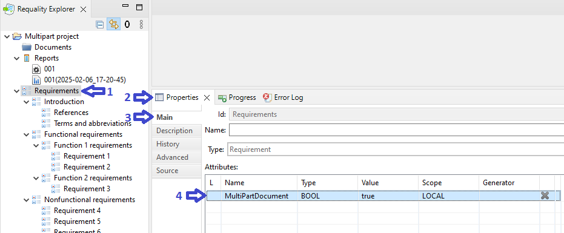
Create new report settings for this project - call the context menu on the node 'Reports', select the points 'New'->'Report Settings'.
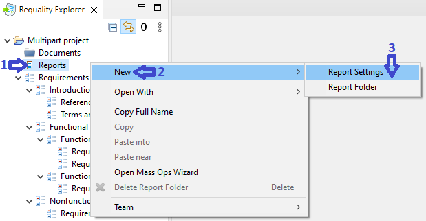
In the created report settings open the 'Report Settings' tab in the window 'Properties'.
In the field 'Template' choose the template 'Requirements view' ('Чтение требований') and press the button 'Generate'.
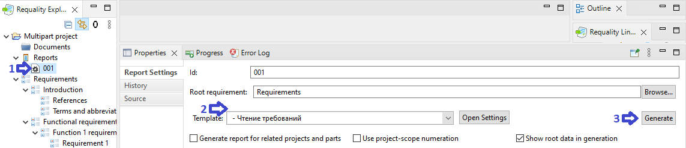
After the generation process is complete, the report will be opened in the viewing area.
The report header will contain several tabs - volumes in accordance with the first-levels sections (arrow 1 on the picture). Clicking on the corresponding report tab allows to change the volume displayed in the viewing area.
Sections with levels 2 and deeper with its contents will be placed inside the generated volumes.
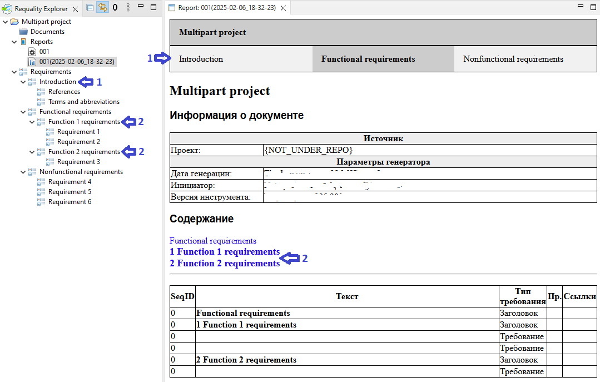
Requality allows to generate reports on project requirements, with splitting the result into volumes for arbitrary chosen section of the requirements specification.
To break down the requirements specification into volumes by sections of any level but one, you should perform the following steps:
Click on the root node of the project – 'Requirements'.
Go to the 'Properties' area.
Open the 'Main' tab.
Add new attribute named 'MultiPartDocument', set its type to reference type 'REFERENCE'.
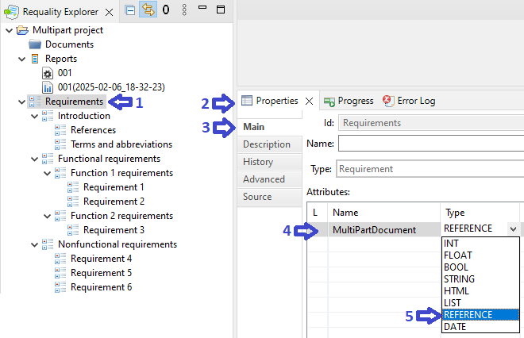
Click the button '…' in the value field of added multipart attribute, then in the opened window 'Link Editor' choose that node, at the level of which it is necessary to create volumes. Click the 'ОК' button.
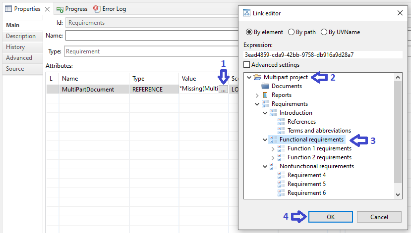
For the node, chosen for multiparting, add new attribute 'MultiPartDocument' with logical type 'BOOL' and set its value to 'true'.
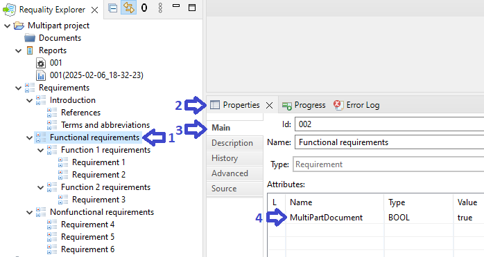
As a result of generating report 'Requirements view' ('Чтение требований') the report will appear in the viewing area. This report will be generated as if its root node was the previously selected section and will have volumes from its subsections.
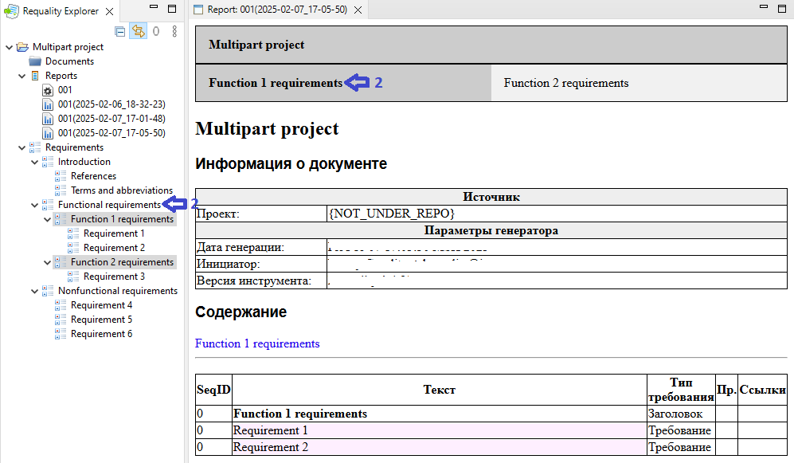
'Requirements view' - is a report, that displays the contents of requirements and text nodes of the project tree in a table form.
The table is preceded by a brief description of the project and a table of contents that includes links to all non-leaf nodes.
As a result, the report consists of several sections:

For more information on the attributes used in the report, see Guidelines for requirements development according to DO-178C section.

To create the 'Requirements view' ('Чтение требований') report you need to:


The report template 'Checking Design Rules' ('Проверка правил оформления') is designed to display a list of problem nodes and the rules they violate in a table form. It includes the information that is usually displayed in the 'Problems' window. That is, nodes in which the 'Checker Rules' rules are violated, or, for example, nodes with incorrectly specified properties.
The report consists of several sections:


To create the 'Checking Design Rules' ('Проверка правил оформления') report you need to:
To work with the 'Requirements coverage analysis' ('Анализ покрытия требований') report template the 'Requality Coverage Tools' plugin should be installed (see Requality Coverage Tools).
The 'Requirements coverage analysis' ('Анализ покрытия требований') report template is designed to display information about the test coverage of requirements tree nodes, such as test purposes and requirements.
The report consists of several sections:
The very top part of the report provides the name of the project for which the report was generated. If the report was generated for several projects at the same time and there are links between them, then all these projects will be listed in the very top line as tabs. You can click on them to move to the corresponding report.
Table with statistical information about the number of covered and uncovered nodes. Displays the number of requirements, test nodes (if any), the number of leaf nodes, and how many of them are covered and uncovered based on the selected coverage information source.

Then the report provides a full list of project requirements, with the coverage status for each node marked in color: fully covered nodes (i.e. all child nodes of this node are covered) are marked in green, partially covered nodes (not all child nodes are covered) are marked in yellow, and uncovered nodes (not a single child node is covered) are marked in red. Each node is listed with tests linked to it, if any. Depending on the settings (see below), each node in the report may display the 'Add test' button, which, when clicked, opens a dialog box for adding a test to chosen node, allowing you to add tests to uncovered nodes directly from the report.

The checkbox 'Generate report for related projects' isn't applicable for this template.
To generate the coverage report you need to select a source of coverage information with the following steps:
In the 'Properties' window of report settings select the 'Requirements coverage analysis' report template from drop down list as a template.
In the 'Properties' window of report settings click the button 'Update Coverage Source', that appears.
A list of available sources will be displayed. You need to select one of the following:
'From File' allows you to select a file of a specific format as the source of coverage information. When you select this source, you will be prompted to select the required file (see Coverage file section).
'Coverage By Test Purposes' allows you to specify test purposes as covering elements.
'Coverage By Projects' is a mechanism for searching coverage information in files with a specific extension available in the current Workspace. To work with this source, you will need to define:
Projects in which files will be searched.
Extension of the files to search for (default is '.ttcn ').
Regular expression for finding requirement and test purpose identifiers (default is '(/Requirements.*)|@requirement (.*)'). Note, that Requality supposes that the found value will be in the first returned group. For more information on constructing regular expressions, see the documentation for regular expressions in Java.
Also it is possible to specify additional settings by clicking the 'Open Settings' button. In the window that opens you can:
Check the 'Hide buttons' box to hide the 'Add Test' buttons from the report - buttons for creating tests directly from the report.
In the 'Test identifier formula' field specify a JavaScript formula, that affects the format of displaying tests in the report. You can use keywords:
'path' (specified in the formula by default) - the full path to the test from the root of the project in which it is located,
'lastSegment' - the name and extension of the file containing the test,
'one' - the name of the node this test is bound to.
An example of the formula's result is displayed below in the 'Testing output' field.

Then generate the report (see Generate report section).
This functionality is available only in Requality Enterprise Edition.
The 'Document generation (ODT)' report template is designed to upload the contents of requirements and text nodes to the open document format OpenDocument Text (ODT). The document is generated in the structure defined in advance in the report template. The generated report contains a link to download the generated document.
An information table of the project is placed before the link to download the document.
As a result the report consists of several sections:

To generate the 'Document generation (ODT)' ('Генерация документов (ODT)') report you need to:
Create a report settings node in the usual way (see Create report settings section).
Select the 'Document generation (ODT)' ('Генерация документов (ODT)') report template in report settings node parameters (see Edit report settings parameters section).
Fulfill the necessary attributes for generation of the title page and headers and footers of the document being created (see Customizing of the ODT report template attributes section).
Then generate the report (see Generate report section).
Press the link 'Ссылка для файла ODT' ('Link to ODT file') located at the end of the report.
The generated ODT file with the default report node settings will have the following structure:
If the attributes were set up correctly, the first two pages of the document will be like the following:

After the ODT file will be generated and downloaded, it is necessary to update its table of contents with the following steps:
Open document in the editor (e.g., LibreOffice Writer),
Scroll to the page where the Table of Contents begins,
Click the right mouse button on the Table of Contents to call the context menu,
Choose the menu item, which matches the Table of Contents update (it is 'Update Table of Contents' in LibreOffice Writer),
Make sure that page numbers of the sections have been successfully added to the Table of Contents,
Save the updated document.
The information for filling the 'Document generation (ODT)' ('Генерация документов (ODT)') report template is taken from three sources:
node with report generation settings (further designated as 'report'),
the selected target requirement (further designated as 'requirement'),
the root node '/Requirements' (further designated as 'root').
When working in the multipart mode (see Multipart documents section) the root requirement of the desired volume should be selected as requirement, e.g. "Volume 1. Basic provisions".
The selection of target requirement is made with the following steps:
Press the button 'Browse…' on the right of the 'Root requirement:' field in the report settings:

In the opened window for requirements selection specify the desired requirement, for whose subtree the report will be generated. Then press the button 'ОК':

Make sure that the 'Root requirement:' field shows the selected target requirement:

In this case when generating the ODT report there will be built a document that includes only requirements located in the specified subsection.
The next group of attributes is specified at the root level:
The next group of attributes is specified at the selected target requirement level:
To work with the 'Document model' ('Анализ покрытия выделенных требований') report template the 'Requality Coverage Tools' plugin must be installed (see Requality Coverage Tools section).
The 'Document model' report template is designed to display information about the coverage of document fragments by tests. Working with the 'Document model' report template is similar to working with the 'Requirements coverage analysis' ('Анализ покрытия требований') report template, but as a result there will be a document with colored fragments, where for each fragment the color indicates if it is covered or not.
The Generate report for related projects checkbox is not applicable for this template.
To build a coverage report it is necessary to choose a source of coverage information with the following steps:
In the 'Properties' window of report settings select the 'Document model' ('Анализ покрытия выделенных требований') report template as an active template.
In the 'Properties' window of report settings press the appeared button 'Update Coverage Source'.
The option 'From File' allows you to select a file of a specific format as the source of coverage information. When this option is chosen you will be asked to select the required file (see Coverage file section).
The option 'Coverage By Test Purposes' allows you to specify test purposes as covering elements.
The option 'Coverage By Projects' is a mechanism for searching a coverage information in files with a specific extension, which is available in the current Workspace. To work with this source you will need to define:
Projects for searching files.
Extension of the files to search for (by default - '.ttcn ').
Regular expression for searching requirements and test purposes identifiers (default expression is '(/Requirements.*)|@requirement (.*)'). Note, that Requality assumes that the found value will be in the first returned group. For more information about regular expression construction see the documentation for Java's regular expressions.
Then generate the report (see Generate report section).
Report template 'Custom visualization of relationships between requirements' ('Настраиваемая визуализация связей между требованиями') is designed to present information about the links-references (of specific type) between nodes in selected part of 'Requality' project catalog.
Report consists of two pages:
The report appearance for the 'Custom visualization of relationships between requirements' report template is shown in the figure below:
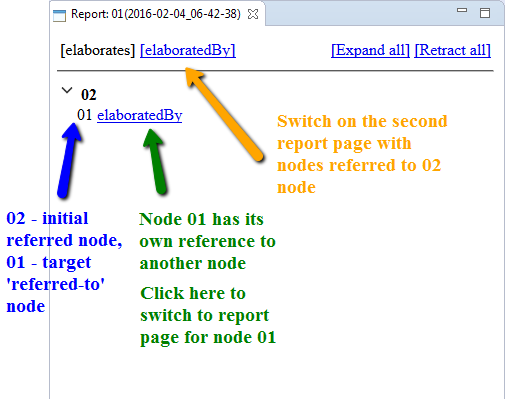
By default the first page is opened. To open the second page you should click on reverse link name (mark 2 on the picture below). The name could be set in project properties. To turn back on the first page click on direct link name (mark 1 on the picture below).
If collapsing mechanism has been launched in report settings (it is launched by default) then on report pages there will be buttons for expanding and collapsing for all strings (3). And for every string with the initial node name (4) there will be expand/collapse arrow to show if referred (by link 5) nodes are expanded or collapsed.
Labels 4 and 6 show results of values substitution to the 'primary' and 'secondary' patterns (described in 3 below). At the same time there is an information about reverse link for 6 on the second page. So you can click on 'Backward_relates_to' to open the second page.
To generate report do the following:
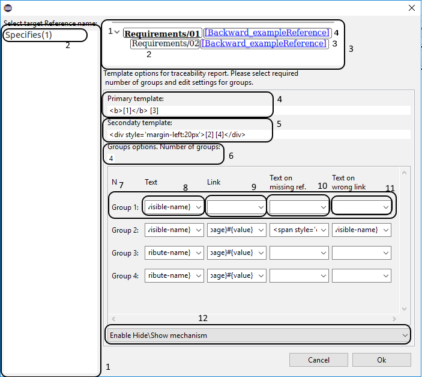
To work with 'Progress' ('Прогресс по проекту') report template the 'Requality Coverage Tools' plugin (see Requality Coverage Tools section) must be installed. And also 'Requality GIT Connector' plugin (for GIT, see Requality GIT Connector section) must be installed as well depending on chosen version control system. Report template 'Progress' is designed to present information about Requality project’s statistics from version control system.
The checkbox 'Generate report for related projects' isn't applicable for this template.
To build a report with project statistics you need to execute the following steps:


To move the file with the generated report to a convenient location in the file system, you need to call the context menu item 'Export Report' on the report node in 'Requality Explorer', then select the path to the required location in the opened dialog box and press the 'OK' button. The report will be saved to the selected directory.
There is possibility to create folders in 'Reports' node and locate report settings and reports there. It helps to comfortably organize reports in 'Requality' project.
Now you can create report settings and generate reports in the new folder.
To delete a report folder choose it in 'Requality Explorer'.
Note! If you delete the folder all nested nodes are deleted. If you agree and want to proceed push 'OK' button in a confirmation dialog.
The name of the report folder is the only parameter of the report folder that can be edited. It is located on the 'Main' tab of the 'Properties' window. To change the name of the report folder, follow next steps:
Click on the desired report folder in 'Requality Explorer', its properties will open in the 'Properties' window.
On the 'Main' tab in the 'Id' field edit the folder name.
Click on any other object or field. The changed name will be saved.
Comment can be created in requirement, test purpose or text node.
Comment can be created in several ways: in 'Requality Explorer', in 'UniEditor' and in 'Review'. Comments can be made from scratch or created from Comment template from current project.
If you have selected an active template for comments then in menu points it will be displayed as 'Add New Comment - basic', where 'basic' – is a name of template.
Point 'Add new Comment' will be also available for comment node, but in this case new comment will be added as a sibling to target comment.
When you performed one of listed actions you will see the 'Comment creation dialog'.

If an active template for comments is selected then all fields of dialog, excepting 'Id', will be filled from that template. The value of 'Id' field will be formed in this way:
Comment can be created as copy of existing comment.
To edit comment, click on it in 'Requality Explorer' and you will see its attributes in its 'Properties' view.
Below you can find the list of attributes that can be edited manualy.
Name
Author
Field for text of comment
To view the revision history of a comment, click on the desired comment in 'Requality Explorer', then in the 'Properties' window open the 'History' tab. Working with this tab is similar to working with the corresponding tab for the requirement (see Revision history of requirement section).
You can delete a comment in 'Requality Explorer'. To do so you need to select target comment, right-click on it and select a point 'Delete Comment' in context menu. In 'UniEditor' and 'Review' editors comment can be deleted in drop-down menu of node or drop-down menu on the top-right corner of editor by selecting 'Delete Comment' point. Also you can use hot key 'Delete'. After one of proposed actions you need to confirm comment removal in displayed dialog by pressing 'OK' button.
Requality uses several ways to identifies requirements tree nodes in addition to classical ID parameter. This approach allows to operate with nodes more flexible, taking into account whether they can be moved, deleted or replaced.
SeqID - auto-generated identifier of a requirements tree node ('SeqID'), it is unique within one project and belongs to one node during the whole lifecycle of the project. The mechanism of auto-generated identifiers can be enabled in the project settings (see Setting up auto-generated identifiers in the Requality project section). The principles of its operation are described in detail in the Unique IDs of requirements tree nodes section.
UserVisibleID - user identifier of the node, which uses the name of the node ('UserVisibleId, UVId').
FullName - the full path to the node, contains all information about its parents nodes, starting from the root node Requirements ('FullName').
UUID - system identifier of the node (it is an internal identifier not visible to users) ('UUId').
Requality allows to set unique identifies ('SeqID') automatically for all nodes of requirements tree (requirements, text nodes, test purposes and others). This mechanism isn't enabled by default in the Requality project. It can be enabled in the project settings (see Setting up auto-generated identifiers in the Requality project section) and works according to the following principles:
The unique identifier of the node is implemented as one of the attributes of the node and is displayed along with other attributes in the attributes table on the 'Properties' tab.
In the project settings you can specify a name for the auto-generated identifier, by default it is named 'ForeignID'. Also a prefix could be specified, which will be displayed in the attribute value before its numeric part, by default prefix is not assigned.
After enabling the auto-generated identifier mechanism all existing nodes of the requirements tree, starting from the root node 'Requirements', will have a corresponding attribute, and all newly created nodes will receive it automatically.
If, before the mechanism was enabled, a node already had an attribute with the same name, then this attribute will become a unique identifier, and its value will be saved for this node as unique.
Exception: situations when an attribute with such a name had a type different from 'INT' before enabling the mechanism, or attributes with such a name had the same values in different nodes. In this case, the auto-generated identifier mechanism will not be enabled, a warning will appear when trying to save such settings and the problem nodes will be marked with an error icon, the settings will not be saved. You will need to make corrections that will ensure the correct type and uniqueness of the values of such an attribute before enabling the mechanism, and then specify the desired auto-generated identifier mechanism settings again.
All auto-generated identifiers are unique. Once a node is deleted, its 'SeqID' will never be assigned to any node in the requirements tree of this project as long as the auto-generated identifier mechanism is enabled.
When disabling the auto-generated ID mechanism all 'SeqID' will be removed and will no longer automatically appear on new nodes.
NOTE! When disabling the mechanism of auto-generated identifiers, all such identifiers will be deleted, even those that were set by the user before enabling this mechanism.
NOTE! If you disable the auto-generated identifier mechanism and enable it again, all auto-generated identifier values will be reassigned regardless of what they were when this mechanism was previously enabled.
Nodes in projects can be sorted in three ways: 'By Locations', 'By Names' and 'By Index'. Default method is 'By Locations'.
By Index - requirements are sorted by indexes. Index in this case is the user-defined position of requirement. For this sort it is possible to set a positon of requirement by moving it with pressed 'Shift' key in 'Requality Explorer'. Requirement needs to be droped on that requirements tree node after which it needs to be placed. For example, for requirement tree

moving of requirement '004' to requirement '002' with pressed 'Shift' will cause the order

Please note the option 'Sort elements types separately'. If activated it will cause the different types of nodes in requirements tree to be sorted separetly. If this option is disabled then different types of nodes will be sorted without separation by type. Option is enabled by default but it is recommended to disable it if you want to work with selected "By Index" sorting.
Changing the sorting settings is available in the Requality project settings (see Nodes appearance settings in the Requality project section).
In the Requality project different nodes of project's requirements tree can be linked with each other by unidirectional links - references. Moreover nodes from different project also can be linked if these projects are located in the same workspace. Related node - initial node related to other node. Referred node - target node referred to by other node.
There is a special type of links for terms - they have a slightly different way of using than normal links. Detailed information about this type of links is located in the Terms section.
The link is located in the parameters of the referring node. It is displayed in the 'attributes table' of the node as an attribute of the 'REFERENCE' type, the value of which is the path to the target node. The name of this attribute is the name of outgoing link, defined by user and could be any. The incoming link is not specified in the attributes table of the target node, but despite this you can specify your own name for it (see Edit name of an incoming link section). All links - both incoming and outgoing - for any node are displayed in the 'Requality Links Explorer' window (see Viewing links of a requirements tree node section).
There are two ways to create a link between nodes in the requirements tree:
Add a link to the target node by manual creating the attribute of the 'REFERENCE' type in the related node's attributes table in the 'Properties' window. To perform this operation it is necessary to have both nodes (related and referred) already existed in the requirements tree. It is also possible to create several outgoing links with the same name from one related node to several different target nodes using an attribute with list type, containing as values a list of attributes of the 'REFERENCE'.
Add a link to the target node automatically using the button '0,1,*' in the menu of the 'Requality Explorer' window. Also it is possible to create new related node during the link creation process. The target (referred) node has to be existed in the requirements tree for this scenario. This method also allows you to create several links from different related nodes to one referred node at the same time. This way doesn't work for creating inter-project links.
Both methods are described in detail below.
Creating one link
Select in the 'Requality Explorer' window the node that will be related.
In the 'Properties view' window on the 'Main' tab in the 'Attributes' table create new attribute with an arbitrary name and choose the 'REFERENCE' type for it.
Then click in the 'Value' cell and click on the button with two dots that appears. The 'Link editor' window will open for selecting the target node of the link.
The 'Link editor' will display project's requirements tree and, if there are other projects in the same workspace, its requirements trees. Here you need to select the requirement to which the link should go, i.e. referred (target) requirement. Radio buttons at the top of the 'Link editor' window allow you to switch between different ways of recording the path to the referred node:
'By element' — the link is written by the internal system identifier of the node.
'By path' — the link is written by the full path from the root of the requirements tree to the referred node ('FullName').
'By UVName' — the link is written by the full path taking into account 'UserVisibleId'.

The path to the selected node is displayed in the 'Expression' field. Там же его можно отредактировать вручную при необходимости.
Note! When selecting 'By element' if the position of a node in the requirements tree changes, the link will continue to refer to this node. When selecting the other two methods of recording a link, if a node is moved, the link will be broken. If another node with the same path is substituted for this node, the link will refer to it. Therefore, it is recommended to use the 'By element' method for unambiguity.
Note! It is important to keep in mind that an inter-project link starts with the name of the project, where the target node is located, and two colons. That is, it looks like: '<project_name>::<node_path>', where '<project_name>' - the name of the project, where the target node is located, and '<node_path>' - is the path to the node in this project.
After selecting the target node in 'Link editor', you need to click the 'OK' button. As a result, in the 'Properties view' window in the 'Attributes' table the attribute-link to the selected target node will appear.

Creating multiple links with the same name at once by manually setting the 'LIST' type attribute
This is a special case of creating links using the attribute of the 'REFERENCE' type. In fact an attribute with type 'LIST' is created in the table of attributes, with links specified as values. All these links will have one name - the name of this attribute. Thus, several links with the same names will be created, originating from one related node and entering different referred nodes. To do this, you need to:
Select the node, that will be related node, in the 'Requality Explorer' window.
In the window 'Properties view' on the tab 'Main' in the 'Attributes' table create new attribute with an arbitrary name and set its type to 'LIST'.
To set a list of values, click on the cell in the 'Value' column, then click on the button with three dots that appears in the cell on the right. The 'List values editor' window will open.
In the 'List values editor' window select the 'REFERENCE' type from the drop-down list at the top.
In the 'List values editor' window click on the empty line and click on the button with two dots that appears. The 'Link editor' window will open for selecting the target node of the link.
Next, you need to select the target node and click the 'OK' button (work with 'Link editor' was described in this section above).
Next, by clicking on the next empty cells in the 'List values editor' window and using the 'Link editor' window, you can spesify other referred nodes one by one. To change the position of a node in the list, you can use the up and down arrows on the right, the value will move higher or lower respectively. To delete a value, click on this value and click the cross on the right in the table, the value will be deleted. To complete editing, click the 'OK' button. To cancel editing, click the 'Cancel' button.
Note! This method does not work for creating cross-project links.
Select referred node in the 'Requality Explorer' (target node, to which links will be created).
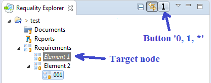
Click the '0, 1, *' button in the menu bar at the top of the 'Requality Explorer' window. The '0, 1, *' button has 3 states: the link creation mode is disabled (indicates with the number '0' on the button), the single link creation mode is enabled (indicates with the number '1' on the button) and the multiple link creation mode is enabled (indicates with the '*' symbol on the button). By default the link creation mode is disabled and the button is in the '0' state. The button's state changes when clicking on it, so to select a requirement and put it in the desired state, you may need to click this button several times until the desired symbol ('0', '1' or '*') is displayed on it. After enabling the mode for creating links (the button '0, 1, *' is in the '1' or '*' state) when you move the focus in the 'Requality Explorer' window to another (non-target) node, the target mode will be highlighted in the requirements tree in gray and in italics.
The next step is the direct selection of related nodes or their creation:
To select a related node from among the existing ones, you need to click on the desired node, call the context menu and select the item 'Add reference to…'.
To create a new related node, simply create it in the usual way. For example, create a new node of any type in the 'Requality Explorer' window or create a requirement by selecting a fragment in the 'document'.
In this case, each node selected with 'Add reference to…' or newly created node will receive a reference to the target (related) node as long as the link creation function is active (i.e. the '0, 1, *' button is in the '1' or '*' state). And this node will receive an attribute with type 'REFERENCE', pointed to the related node.
If the target node was selected in the single link creation mode (state '1' of the button '0, 1, *'), then after selecting/creating one related node, the link creation mode will be disabled (the button '0, 1, *' will be in the state '0'). If the multiple link creation mode was selected (state '*' of the button '0, 1, *', then all created nodes will be related. To disable the link creation mode you need to set the button '0, 1, *' in the state '0'.
For this method of creating links the name of the reference attribute (attribute of type 'REFERENCE') is set by default in the project settings and can be changed later. To do this open the 'Properties' window from the context menu of the current project. In it on the left side select 'Requality → Requality References', then on the right side in the 'References settings' section you can change the attribute's name by specifying another name in the 'Default reference name' field. The name of links by default is 'elaborates'.
Also it is important to know, that different projects can have different referred nodes, and that the linking mode is saved within a single working session. Once Eclipse is closed, the link creation mode is disabled.
The same 'link' between two nodes is outgoing link for the related node and incoming for referred (target) node. The name of this link is specified as the name of an attribute of the 'REFERENCE' type in the 'attributes table' of the referred node. This link is not specified in the attributes table of the referred node. But it is visible for example in the 'Requality Links Explorer' window (see View links of a requirements tree node section) for the referred node as an incoming link. By default the name of the incoming link of the referred node is the same as the name of the outgoing link of the corresponding related node. However, for ease of viewing, the name of the incoming link can be changed manually in the project settings (see Setting up links in the Requality project section). It is recommended to give meaningful names to the 'outgoing link name — incoming link name' pair of links, so that the relationship between them would be clear. For example 'describes — described by'. It is also important, that the Requality project has predefined links, for which both incoming and outgoing names are already defined. All existing link names in the project and all specified pairs of links 'outgoing link name — incoming link name' can be viewed in the project settings (see Setting up links in the Requality project section).
You can view the incoming and outgoing links of any requirements tree node using the 'Requality Links Explorer' window. If this window isn't visible in the current Eclipse perspective, open it from the main menu by going to 'Window → Show View → Other'. Then expand the 'Requality' item and select window 'Requality Links Explorer' for opening.
This view displays the nodes that are linked to the node selected in the 'Requality Explorer'. All nodes, that are referred (target) for this selected node, will be displayed in this window in the 'Outcoming' section with the name of the attribute that contains the link. All nodes, that have links to the selected node, will be displayed in this window in the 'Incoming' section with the incoming link names. Double-clicking on a link to a node will move the focus in 'Requality Explorer' to that node, and the 'Requality Links Explorer' window will show actual link information for it.
All nodes incoming and outgoing links have its names. If a link is specific for only one node,its name wll be displayed before the name of this node. If one link is specific for several nodes, these nodes will be grouped under the name of this link, i.e. the name of this link will be displayed followed by the names of the nodes.
If the node is located in other project, the name of the project will be shown before the node's name, with two colons between the names as a separator.
This window has several buttons to filter the displayed links:
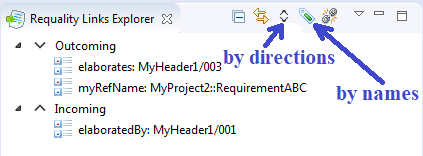
The button with up and down arrows filters links by the direction of the links. By default all links are shown - both incoming and outgoing. To display only outgoing links you need to click on this button to set it to the state 'down arrow', to display only incoming links - to the state 'up arrow'. To change the state of this button you need to click on it several times until its icon becomes the desired one.
The button with the green label icon allows you to filter nodes by the names of attributes of the 'REFERENCE' type. To enable this filter click this button and the new window will open with the list of all the names of attributes of the 'REFERENCE' type for the current project. Select one or more options. Also it is possible to choose an option to display nodes with any attribute names - to do this choose the top option.

For convenient viewing of linked nodes in the 'Requality Links Explorer' there is a special mode of highlighting linked nodes. When using this mode you can see the nodes that are linked by the selected link, they are highlighted in the 'Requality Explorer'. To do this you need to:
An example of how the highlighting works in a situation, when requirement 003 has two incoming links from requirements 001 and 002 (the 'Requality Links Explorer' window is opened for requirement 003):
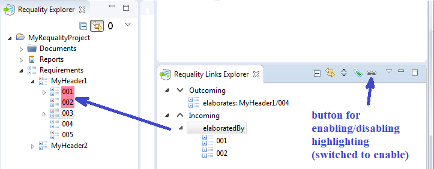
Requality has a special feature that allows you to define certain concepts in the text of nodes and reference them from other nodes where these concepts are used. Such concepts are called terms. Links between term nodes and nodes, using these terms, are a little bit different from regular links described above, but are also displayed in the 'Requality Links Explorer'.
Term links can be cross-project as well as regular links between nodes.
A term name must be unique within the Requality project, where this term was defined.
In practice it looks the following way. In the description of some node the term is described, which is a word or phrase, or another set of symbols. For example: "Аааbbb - Aaabbb is a method for performing calculations". This term is used in the description of other nodes. For example: "To fulfill the conditions, you need to use the Aaabbb method", etc.
To create a link between regular nodes and term nodes you need to do the following:
Now Requality will consider that a relationship of the type 'Terms - Term referrers' had appeared between these nodes.
The relationship between term definition and nodes, which are using it, is displayed in the 'Requality Links Explorer' window (see View links of a requirements tree node section), as a regular link, specified with attribute of the 'Reference' type. Unlike regular links, term links are organized into special separate groups in the 'Requality Links Explorer':
But all the possibilities of this window (filtering, highlighting) can also be used for them.
Another feature is that instead of link titles, term names are given.
In the 'Requality Links Explorer' the names of the incoming or outgoing links are given for all nodes. If a link is specific to an only node, its name will be listed before the name of that node. If a link is specific to several nodes at the same time, they will be grouped under its name, i.e. the name of the link will be listed, followed by the names of the nodes.

Work in 'Module Editor' is similar to work in 'UniEditor', but is more limited in functionality. In Module Editor you can operate only with requirements and text nodes.
In 'Module Editor' you can open the requirements tree, including text nodes. The root node will be the node on which you called 'Module Editor', i.e. in this editor you can open both the entire requirements tree (by calling it on the root requirements node 'Requirements') and a separate subtree of requirements (by calling the editor on one of the 'subrequirements').
To open the editor, you need to do the following:
In the 'Requality Explorer' select the target requirement or text node, open the context menu and select 'Edit in Module Editor'.
In 'UniEditor' you can open 'requirements' tree (with test purposes and comments). The root node of this tree is a requirement on which you called 'UniEditor'. Thus in UniEditor you can open whole requirements tree (just call 'Edit in UniEditor' on root 'Requirements' node) or some 'subtree' (call it on some subrequirement).
You need to do the following to open an editor:
Note! In 'UniEditor' you can use hot keys for your convenience. See Keyboard in UniEditor, Review and Module Editor: hot keys section.
The procedure of adding new requirements is described in Create requirement section.
The procedure of adding new requirements by copying is described in Create requirement by copying section.
The procedure of requirement deletion is described in Delete requirement section.
Requirement field consists of two parts. The upper one contains requirement name, the lower one contains requirement alternative description.
The procedure of adding new text node is described in Create text node section.
The procedure of adding new text node by copying is described in Create text node by copying section.
The procedure of text node deletion is described in Delete text node section.
Text node has two fields. At the left of top field you can see button. It can be used to change node type from 'Text' to 'Header' and vice versa.
The procedure of adding new test purpose is described in Create test purpose section.
The procedure of adding new test purpose by copying is described in Create test purpose by copying section.
The procedure of test purpose removal is described om Delete test purpose section.
The field of the test purpose consists of two parts. The upper part contains the name of the test purpose; the lower part contains the text of the test purpose.
The procedure of adding new comment is described in Create comment section.
The procedure of adding new comment by copying is described in Create comment by copying section.
Instructions on how to delete a comment can be found in Delete comment section.
To edit the text of the comment, double click in the comment field. Here you can see control panel to edit the text. It includes buttons for text formatting, for adding symbols, pictures, links, etc. To save changes push 'Save' button in this menu. Also you can use button to undo editing.
Working in 'Review' is similar to working in 'UniEditor', but more limited in functionality. Here you can't add or delete requirements and test purposes, you can only edit their status.
In 'Review' editor you can open 'requirements' tree with 'test purposes' and 'comments'. Requirement for which you open 'Review' is displayed as root node. It means that you can open the requirement tree in a whole (by calling 'Review' in the 'Requirements' root node) or separate 'requirements subtree' (by opening the editor on the several sub-requirements).
To open editor you need to do the following:
Please note! In 'Review' it may be convinient to work with hot keys. You can read more at Keyboard in UniEditor, Review and Module Editor: hot keys section.
To change the status of requirement/test purpose click on status-icon on the left side of the node name. When clicking, the status is changed in the following order: 'in process' → 'complete' → 'verified' → back 'in process', etc.
In 'UniEditor', 'Review' and 'Module Editor' editors you can use hot keys to work only from keyboars.
NOTE! In different editors for different node types you can use particular set of hot keys.
Two formats of hot keys are available:


You also can open common menu with mouse. Hover a button on top right corner of editor and menu will be shown. After that you can use shortened variants of hot keys without additional 'Ctrl+D', or just click on menu points by mouse.

One can also use keyboard to navigate over node editors and nodes.
All related key boundings are listed in table:
| Action | Hotkey | Alternative Hotkey (first press Ctrl+D and then given key) |
|---|---|---|
| Create new requirement as child | Ctrl+R | R |
| Create new requirement as sibling | Ctrl+S | S |
| Create new text node as child | Ctrl+J | J |
| Create new text node as sibling | Ctrl+I | I |
| Remove node | Del | Del |
| Edit selected node in separate window | Ctrl+E | E |
| Change node type from Requirement to Text Node and vice versa | Alt+M | M |
| Create new test purpose | Ctrl+P | P |
| Create comment to selected node | Alt+C | C |
| Open template selection and editing dialog | Ctrl+T | T |
| Set focus to node below/under | Up/down arrows | -- |
| Expand/Retract subtree with root on selected node | Right/left arrows | -- |
| Edit node id or name | F2 | -- |
| Edit node description ('Description' field) | Enter | -- |
| Change focus to next view (for example, 'Outline'). Note. Focus can be changed to tabs on current view and buttons on control panel of current view, for example, to minimize or to fullscreen. | Tab | -- |
| Change focus to previous view | Shift+Tab | -- |
| Enter a view (use it to navigate between different views using Tab and Shift+Tab) | F12 | -- |
| Open editor to requirement below or under when editor is opened. | Ctrl+up/down arrows | -- |
| Undo | Ctrl+Z | -- |
| Redo | Ctrl+Shift+Z | -- |
| Refresh editor | F5 | -- |
| Open search dialog | Ctrl+F | -- |
| Close node editor (exit node edit mode) | Esc | -- |
| Save changes in editor | Ctrl+S | -- |
| Move to page below current | PageUp | -- |
| Move to page after current | PageDown | -- |
| Change focus to first node | Home | -- |
| Change focus to last node | End | -- |
| Add test to node | Alt+T | -- |
| Start to edit node | Enter | -- |
| Start to edit id or name | F2 | -- |
| Change status | Alt+S | -- |
| Expand node | Num+ | -- |
| Retract node | Num- | -- |
| Copy node | Ctrl+C | -- |
| Cut node | Ctrl+X | -- |
| Paste node as sibling (without sub-nodes) | Ctrl+Shift+V | -- |
| Paste node as child (without sub-nodes) | Ctrl+V | -- |
| Paste node with all its subnodes as sibling | Ctrl+Alt+Shift+V | -- |
| Paste node with all its subnodes as child | Ctrl+Alt+V | -- |
To edit 'virtual node' parameters select it in the 'Requality Explorer'. Now you can see requirement properties in the 'Properties' view.
Here we describe parameters of the virtual node you can change manually.
Virtual node attributes are similar to requirement attributes. And you should work with them in exactly the same way. See Edit requirement parameters section for a detailed description of working with attributes.
To hide 'virtual node' select it in 'Requality Explorer', select 'Hide Selected Virtual Nodes' in its context menu.
The virtual node will be hidden in the project tree, only its subtree (reused nodes) will be shown.
To show (undo hide) virtual node select project tree element that contains this virtual node and call context menu on it. Select 'Show hidden children' in the context menu.
Virtual node will be shown in the project tree.
It is possible to search for the required nodes in the Requality project using the search function. To do this perform the following steps:
In the 'Requality Explorer' window open the search dialog box in one of two ways:
Press the key combination 'Ctrl+F'.
In the main menu select 'Edit → Find/Replace'.
The search dialog window 'Search Element' will open.

Select the search scope. To do this click the 'Select scope' button, select one of the project nodes in the 'Element selection' dialog, that opens, and click 'OK'. The path to the node will be displayed in the 'Scope' field, but you can enter and edit it manually in this field if you wish. The search will be performed in this node and its subtree.
In the search window you can select one of three search modes: by node identifier ('By path'), by node parameters ('By attributes') and by formula ('By formula').
To search by node ID perform these steps:
Open the 'By path' tab in the 'Search Element' search window.
Enter the path to the node you are looking for in the 'Path' field. The path can be specified as 'UserVisibleId' or full path to the node.
To search by node parameters perform these steps:
Open the 'By attributes' tab in the 'Search Element' search window.

Select the name of the parameter to search in the 'Attribute name' drop-down list or enter it manually in the fiels to the left of the drop-down list. Standard 'node parameters' and attributes of the node 'attributes table' can be used as search parameters. You can also use the following parameters:
If the parameter name is specified manually, the value of the 'Attribute name' drop-down list is ignored.
In the 'Method' drop-down list select the method for comparing the values:
EQUALS — the parameter value completely equals the desired value;
NOT_EQUALS — the parameter value does not match the desired value;
EXISTS — the parameter value is not empty (in this case, the desired value does not need to be specified); when this method is selected, the 'Value' field becomes inactive;
NOT_EXISTS — the parameter value is empty (in this case, the desired value also does not need to be specified); when this method is selected, the 'Value' field becomes inactive;
CONTAINS — the parameter value contains the searched value;
NOT_CONTAINS — the parameter value does not contain the searched value;
In the 'Value' field enter the desired value manually (if required).
To search by formula you need to do the following actions:
Open the 'By formula' tab in the 'Search Element' search window.

Enter the search formula in the 'Formula' field. The formula must be written in JavaScript in the same format as the 'checker rules' are written (see Rule-related JavaScript expression format section).
Press the left or right double arrow buttons to activate the search and to move up or down the requirements tree to the next nodes that meet the search conditions. The nodes found according to the specified parameters will be highlighted in the 'Requality Explorer' one by one.
At the bottom of the search window there are two lines containing some information about the search. The first line displays the total number of nodes found and, if their quantity is more than zero, the ordinal number of the node currently being viewed in 'Requality Explorer'. The line below displays the UVId of that node. If the search parameters are set incorrectly, an error message will appear in these lines.
It's possible to check if Requality project tree is set correctly and to find problems in nodes description. To do this, you need to use the checking mechanism - the so-called 'checker'. Open context menu on the root node of your Requality project and select 'Enable Checkers'. After that all the nodes in which 'checker' finds error are highlighted.

Requality has its own internal mechanism based on GIT technology for working with an external data storage — a repository. It should be used to be able to work with 'revision' history. Previously the 'Requality GIT Connector' plugin must be installed (see Requality GIT Connector section). This plugin is included in the Requality bundle by default.
Note! Processes for interacting with an external repository may take some time. To find out about this, pay attention to the process completion indicator that appears in the lower right corner of the Eclipse window.
To work with the repository, you need to use the context menu item 'Repository' on the Requality project in the 'Requality Explorer' window.
EXCEPTION. For first downloading project from repository at the moment you need to use to use the interface of an external GIT plugin.
There are two options for initially uploading a Requality project to a GIT repository:
initial publish of the project to a locally hosted GIT repository (see Initial uploading a project to a local repository section),
initial publish of the project to a GIT repository deployed on the remote gitlab server (see Initial uploading a project to a remote repository section).
For publishing local changes to an external repository you need to call the context menu on the project and select 'Repository → Publish local changes'. If there were no local changes, a window will appear with a message about their absence. If there are local changes, a window for entering a comment will appear, in which you need to specify a comment for the changes being saved and click 'ОК'. After that you need to wait for a window to appear with a message about the completion of the procedure for uploading local changes.
To get an update of a local project from the repository you need to call the context menu on the project, select 'Repository → Check for updates'. If there have been no changes in the repository since the last update, a window will appear with a message about the absence of changes. If changes have appeared in the repository and there are no local changes, the project will be updated with a 'revision' from the repository. If there are changes in the repository and there are local changes to the project, a window will appear for selecting further actions:
cancel the procedure (the 'Cancel' button). After selecting this button, the procedure will be completed and no changes will occur.
оdiscard local changes and update with a revision from the repository (the 'Discard local changes' button). After clicking this button, you need to wait for a window to appear with a message about the completion of the procedure for discarding local changes and downloading a revision from the repository.
start the procedure of comparing the local project with its revision from the repository (the 'Start merge' button). At the moment, this option is under development and is not available for use, a window with a message about this fact will appear when you click the 'Start merge' button.
To revert local changes of the project and switch to the revision from the repository, you need to call the context menu on the project and select 'Repository → Revert local changes' in it. If there are no local changes, a message about this will appear. If there are some local changes, a dialog box will appear to confirm the revert of changes. You need to click the 'Revert' button in it to agree. After this action, you need to wait for the window to appear with a message about the completion of the procedure for reverting local changes, the local changes will disappear from the project and it will be updated with the revision from the repository.
It is also possible to switch to an older version of the project. You can switch the state of the project to one of the older 'revisions' from the repository and then switch back to the current one.

To initially upload the Requality project to your local repository, you need to:
Check that the following preconditions are met:
There is an empty local git repository. It is important to make sure that an empty repository has been created, for example with the command 'git init --bare',
There is an existed Requality project that is not associated with any repository (neither local nor remote).
In Requality Explorer, at the project level, open the context menu and select 'Repository' → 'Publish local changes…' in it.

In the window that appears, click the 'Create…' button to create a local repository. You can specify any location other than the application's workspace, and the project will be automatically transferred there. In this scenario, it is recommended to specify the path to the git folder located in the user's home folder as such a folder.

In the path suggested by the system, after the git folder, specify the name of the project (then a new folder will be created) or the name of an existing folder selected for the project, then click the 'Finish' button in the active repository creation window, and then click the 'Next' button in the project download window:

In the initial project upload window that appears, specify the accompanying text for the commit, then click the 'Next' button:

Next, you need to enter the address of the local repository in the 'URI' field in the 'Location' section - to do this, you need to click the 'Local Folder…' button and select a folder in the explorer that is an empty local git repository (corresponding to the scenario precondition). The 'Host' and 'Repository path' fields will be filled in automatically. Next, you need to click the 'Finish' button:

A window will be displayed confirming successful upload to the local repository, you must click the 'Close' button.

The initial upload of the project to the local repository has been successfully completed.
To initially upload the Requality project to your remote repository, you need to:
Check that the following preconditions are met:
There is an empty repository on the gitlab server. It is important to make sure that an empty repository has been created (the «Initialize repository with a README» option was not accidentally selected),
There is an existed Requality project that is not associated with any repository (neither local nor remote).
In Requality Explorer, at the project level, open the context menu and select 'Repository' → 'Publish local changes…' in it.

In the window that appears, click the 'Create…' button to create a local repository. You can specify any location other than the application's workspace, and the project will be automatically transferred there. In this scenario, it is recommended to specify the path to the git folder located in the user's home folder as such a folder.

In the path suggested by the system, after the git folder, specify the name of the project, then click the 'Finish' button in the active repository creation window, and then click the 'Next' button in the project download window:

In the initial project upload window that appears, specify the accompanying text for the commit, then click the 'Next' button:

Next, you need to enter the address of the remote repository on the gitlab server in the 'URI' field in the 'Location' section, the 'Host' and 'Repository path' fields will be filled in automatically. In the 'Authentication' section, specify the credentials (login and password) of the gitlab user on whose behalf the data is loaded, and click the 'Finish' button:

A window will be displayed confirming successful upload to the remote repository, you must click the 'Close' button.

The initial upload of the project to the remote repository has been successfully completed.
To view the 'revision' history of all nodes of the requirements tree, there is a 'History' tab in the 'Properties view' window. This tab allows you to run a comparison of one of the old revisions with the current local state. The 'History' tab is also available for use at the root node of the project, but in this case its contents are slightly different.
To view the 'revision' history of the Requality project you need to:
In the 'Requality Explorer' click on the root node of the project.
In the 'Properties view' window open the 'History' tab.
This tab contains a revision history table containing a list of all revisions of the project saved in the repository and some related information (see the 'History' tab in the Requality project settings). The top row corresponds to the last revision synchronized with the global repository, then the revisions go from top to bottom in descending order, from the newest to the oldest.
To view a comparison of the current local version and one of the older revisions, you need to:
Open the 'History' tab in the 'Properties view' window on the project level, as described above.

Double-click the old revision you are interested in in the table on the 'History' tab . This action will open the 'Team Syncronizing' perspective (a warning window about opening this perspective may appear first, you need to click 'Yes' in it).
In the 'Synchronize' window expand the project node. The expanded project node displays all nodes that have changed compared to the old revision.

Select the project node of interest and double-click on it.
The 'Compare' window, which consists of two parts, opens to compare the old and current states of the node. The part of the window called 'Local File Workspace' displays information about the current local state of the node, and the other part called 'Remote File' displays the state of the node in the old revision. The data that has changed is marked in yellow. The data that was not in the old revision but appeared in the new one is marked in green. The data that has disappeared is marked in red. If the 'Remote File' part of the window is missing, then this node did not exist in the old revision of the project. If the 'Remote File' part of the window contains information about the node, and the 'Local File Workspace' part is empty, then this node existed before, but is missing from the current state of the project.

The repository mechanism in Requality provides the ability to view the revision history for a particular node, as well as view a comparison of the current local state of the node with one of the older revisions.
To view the revision history of a node узла, you need to:
In the 'Requality Explorer' window, expand the Requality project requirements tree and click on the node of interest.
In the 'Properties view' window, open the 'History' tab.
This tab contains a revision history table, which lists all revisions saved to the repository that concern this particular node, and some related information (see the 'History' tab in the Requirement Parameters for an example). The top row of the table corresponds to the most recent revision synchronized with the global repository, and then the revisions go from newest to oldest, from top to bottom.
To view a comparison of the current local version of a node and one of the older revisions, you need to:
Open the 'History' tab in the 'Properties view' window for the node of interest, as described above.

Double-click on the old revision you are interested in in the table on the 'History' tab.
This will open the 'Compare' window, which will display the comparative information. This window, although not opened in a special perspective, is completely identical in appearance and content to the 'Compare' window that opens when viewing project revisions in the 'Team Syncronizing' perspective (for more information see View revision history for the Requality project section).
'Requality' provides importing requirements catalogs from ReqIF format and exporting requirements catalogs created in 'Requality' project into ReqIF format.
If the requirements directory contains images or tables, LibreOffice and 'ImageMagick' must be installed on the computer beforehand and the corresponding settings must be specified in Requality:
Download adress for 'ImageMagick': https://www.imagemagick.org/script/download.php.
Download adress for LibreOffice: https://ru.libreoffice.org/.
After installing these programs in the main Requality window open the menu 'Window → Preferences'. In the dialog box that opens on the left select the 'Requality' option, on the right in the 'Path to ImageMagick' field specify the path to the directory where 'ImageMagick' was installed. In the 'Path to libreoffice(v5+) soffice' field use the 'Select' button to specify the path to the LibreOffice executed file. Then save the settings by clicking 'Apply' and 'OK' buttons.
Currently, to export a Requality project to ReqIF format, you need to use a ReqIF file with a data model obtained from the target tool (in this case, from IBM Rational DOORS).
To convert a requirements catalog from a Requality project to ReqIF format, you need to:
On the Requality project call the context menu and select 'Export...' option in it. In the opened dialog box select 'Requality' → 'Export to ReqIF' and click the 'Next' button.

In the next window select the ReqIF file, which will be the basis for the new ReqIF while generated. Such a file must have the extension '.xml' and have the content in the DOORS format. At the moment other formats are not supported by Requality. After that click the 'Next >' button.

In the next window, you need to specify the name and path to the file where you want to save the requirements catalog converted to ReqIF format. To do this, click the 'Browse' button, select the target directory in the window that opens and specify the name for the new file in the 'File name' field instead of the asterisk (*), keeping the 'reqif' extension, then click the 'Save' button. After this, it becomes clear that the path to the new file is displayed in the export window. Next, click the 'Next' button in the export window.

This step can usually be skipped, since these settings are usually set automatically. If this did not happen, you need to perform the following steps. In the leftmost field select the project exported from DOORS. In the middle field, select the project that is exported from Requality. Then click the 'Add new mapping' button. This will indicate a mapping relationship between these two projects, and it will be displayed in the rightmost field. If you need to remove such a relationship, you need to select it in the rightmost field and click the 'Remove mapping' button. Then you need to click on the required relationship in the rightmost window and click the 'Finish' button.

After this, the requirements catalog will be exported to ReqIF format: the requirements catalog from the Requality project will be converted to a requirements catalog in ReqIF format and placed in the specified project as a file with the extension '.reqif'. This ReqIF file can be used by any requirements management tool that recognizes the ReqIF format.
To import requirements catalog from ReqIF format into 'Requality' project it is required to:


After those actions, the system will import the selected ReqIF document into 'Requality' project format: new 'Requality' project will be created, with requirements catalog created in accordance to requirements catalog in the initial '.reqif' document, specified types and attributes mappings.
It is assumed that the Requality project has been already created. The task is to transfer it to DOORS. To do this, the following sequence of actions must be performed.
If the Requality is created from scratch, you must first create an empty formal module in DOORS and add all the attributes you will use to it. If the attributes are not added to the module, then when you transfer requirements from Requality, they will not be recognized in DOORS. You also need to create a link module for this formal module. For example, create an element in the formal module and than create a link to itself. In this case, DOORS itself will offer to create a link module. Then delete the element. This newly created empty module will be updated with the project from Requality.
If the project from Requality is updating an existing DOORS module, this step should be skipped. The further steps are identical for both cases.
For convenience, let's name the module in DOORS 'D0'. Export both modules (formal and link) to a '.reqif' file, having previously blocked them for changes. For convenience, let's name this file 'reqif(D0)'. And place the resulting file in the directory of the workspace used by Requality.
In Requality export the project to a ReqIF file using the 'reqif(D0)' file (see Export Requality requirements catalog into ReqIF section). We'll name the resulting file 'reqif(R1)'.
In DOORS, import the newly created file 'reqif(R1)'. As a result of import, a new module is created in DOORS. Let's call it 'DNew1'.
In DOORS, we update the initial module 'D0' with the new module 'DNew1'. As a result, we transfer all requirements received from Requality to the initial module 'D0' in DOORS. Now the old module 'D0' is updated. To indicate the presence of changes, we will now call it 'D1'.
However, at this stage the synchronization of the Requality project and the DOORS module is not yet complete. Next, it is necessary to set the 'ForeignID' identifiers in the Requality project. These identifiers allow for the implementation of a unique identification of all elements, identical for the Requality project and the DOORS module.
In DOORS, from the updated module 'D1', we again make an export into ReqIF with all data locked. Let's call the resulting file 'reqif(D1)'. It needs to be placed in the workspace of Requality.
In Requality, on the root node of the requirements tree 'Requirements', you need to run the mass operation 'DoorsIdImporter' (how to do this is described in the section DOORSIdImporter). This will result in setting all the 'ForeignID' attributes from the DOORS project that have not yet been set. We will designate the Requality project updated in this way as 'R2'.
The following steps are required to migrate text links from Requality to DOORS. This is only possible after the 'ForeignID' universal identifiers have been set.
You need to repeat step 3, but use the file 'reqif(D1)'. We will call the resulting file 'reqif(R2)'.
Repeat step 4, importing the 'reqif(R2)' file into DOORS. As a result, a new module will appear in DOORS, let's call it 'DNew2'.
Repeat step 5 and update module 'D1' in DOORS with the new module 'DNew2'. As a result, the initial module will be updated again (let's call it 'D2' now).
The resulting projects 'R2' (in Requality) and 'D2' (in DOORS) are synchronized.
If interproject links (like 'REFERENCE' or 'terms') do not work, it is recommended to check the names of the linked projects. The project name must match the one specified in the corresponding reference attributes and terms.
You can see what project name is specified in the reference attributes for the related nodes (from which the link originates), and in the terms for the nodes where the term is used. To do this, click on the node in 'Requality Explorer', all its links will be displayed in the 'Requality Links Explorer' window, and the interproject links will begin with the project name (see View links of a requirements tree node section). In addition, you can open the 'Properties' view for this node and on the 'Main' tab in the 'attributes table' view the values of the 'REFERENCE' type attributes and the 'usedef' attribute, at the beginning of each interproject link the name of the linked project will be indicated. If necessary, they can be edited there in the attributes table.
The following attributes of requirements and text nodes are recommended when developing requirements according to DO-178C. Some Requality 'reports' support working with these attributes, assuming that they have specially provided values. However, their presence is not mandatory. These attributes are set by the user independently.